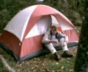

Аппалачи 2004. Продолжение.
Начало здесь
 Конечно продолжение истории началось у задолбавшего океана. Прошло ровно
три месяца со дня последнего путешествия в Аппалачи, которое, как Вы
помните, пришлось досрочно свернуть. И вот, наконец, появилась возможность
вернуться и закончть задуманное. "Есть ли у Вас план, мистер Шимановски?" -
по обыкновению спросил я сам себя и... затруднился ответить. Надо сказать,
что отсутствие твердого плана наказало нас уже на следующий день.
Конечно продолжение истории началось у задолбавшего океана. Прошло ровно
три месяца со дня последнего путешествия в Аппалачи, которое, как Вы
помните, пришлось досрочно свернуть. И вот, наконец, появилась возможность
вернуться и закончть задуманное. "Есть ли у Вас план, мистер Шимановски?" -
по обыкновению спросил я сам себя и... затруднился ответить. Надо сказать,
что отсутствие твердого плана наказало нас уже на следующий день.
 Вот он, следующий день. Двадцать четвертое сентября, 9.00 утра по
вашингтонскому времени. Поехали! Вопрос, куда? Отстутствие плана было
обусловлено вот чем. Сентябрь на юго-востоке США - самый неспокойный
месяц сезона ураганов. В этом году означенный сезон был просто диким.
Ураганы шли каждую неделю и каждый угрожал нашим местам. Только несколько
дней назад в Аппалачах прошел ураган "Иван", оставив после себя обвалы
и поврежденные дороги. "Наша" любимая стоянка в Дымящихся Горах оказалась
закрытой. Поэтому мы выбрали для себя другое место на границе Южной Каролины
и Джорджии. Но за день до отъезда выяснилось, что старую стоянку уже
открыли. Таким образом, в самый последний момент нас еще мучили сомнения,
куда ехать. Уже в пути, достигнув "критической" развилки дорог я спросил,
куда едем? И не дожидаясь ответа свернул на "новую" стоянку.
Проехали Гринвилл, оставивший только лишь воспоминание о повсеместном
ремонте дорог, и углубились в лесные предгорья. Замелькали загадочные
названия "Окони", "Валхала", "Чаттанучи". Вообще, есть у меня идея
хорошенько изучить местные географические наименования, а заодно восполнить
пробелы в знании языка местных индейцев.
Последние мили перед стоянкой мы проделали по шоссе 107, известному
тем, что тут встречали привидение, призрак Ларри Стивенса, погибшего
пятьдесят лет тому назад. Почесть эту историю можно тут.
В 16.00, семь часов спустя после начала путешествия мы достигли выбранного
палаточного городка, где испытали жестокое разочарование. Ну, лес и лес.
В Мертл Биче точно такой же. Ни гор ни пейзажей. И мы решились на отчаянный
шаг! Едем на старую стоянку в Дымящихся Горах. Это еще 2-3 часа езды. Через
несколько миль нас поджидал следующий удар. Выше в горах 107 шоссе оказалось
закрытым. Извольте в объезд! Ну поехали, а что делать? Но! Я, люди,
много видел горных дорог. В Крыму жил. Но такого пожалуй не встречал,
в плане крутизны и кривизны. На спусках, через открытые окна доносился
веселый аромат горящих тормозов. Да-да, я знаю, что надо коробкой тормозить,
но на некоторых поворотах приходилось останавливаться практически до
нуля.
Вот он, следующий день. Двадцать четвертое сентября, 9.00 утра по
вашингтонскому времени. Поехали! Вопрос, куда? Отстутствие плана было
обусловлено вот чем. Сентябрь на юго-востоке США - самый неспокойный
месяц сезона ураганов. В этом году означенный сезон был просто диким.
Ураганы шли каждую неделю и каждый угрожал нашим местам. Только несколько
дней назад в Аппалачах прошел ураган "Иван", оставив после себя обвалы
и поврежденные дороги. "Наша" любимая стоянка в Дымящихся Горах оказалась
закрытой. Поэтому мы выбрали для себя другое место на границе Южной Каролины
и Джорджии. Но за день до отъезда выяснилось, что старую стоянку уже
открыли. Таким образом, в самый последний момент нас еще мучили сомнения,
куда ехать. Уже в пути, достигнув "критической" развилки дорог я спросил,
куда едем? И не дожидаясь ответа свернул на "новую" стоянку.
Проехали Гринвилл, оставивший только лишь воспоминание о повсеместном
ремонте дорог, и углубились в лесные предгорья. Замелькали загадочные
названия "Окони", "Валхала", "Чаттанучи". Вообще, есть у меня идея
хорошенько изучить местные географические наименования, а заодно восполнить
пробелы в знании языка местных индейцев.
Последние мили перед стоянкой мы проделали по шоссе 107, известному
тем, что тут встречали привидение, призрак Ларри Стивенса, погибшего
пятьдесят лет тому назад. Почесть эту историю можно тут.
В 16.00, семь часов спустя после начала путешествия мы достигли выбранного
палаточного городка, где испытали жестокое разочарование. Ну, лес и лес.
В Мертл Биче точно такой же. Ни гор ни пейзажей. И мы решились на отчаянный
шаг! Едем на старую стоянку в Дымящихся Горах. Это еще 2-3 часа езды. Через
несколько миль нас поджидал следующий удар. Выше в горах 107 шоссе оказалось
закрытым. Извольте в объезд! Ну поехали, а что делать? Но! Я, люди,
много видел горных дорог. В Крыму жил. Но такого пожалуй не встречал,
в плане крутизны и кривизны. На спусках, через открытые окна доносился
веселый аромат горящих тормозов. Да-да, я знаю, что надо коробкой тормозить,
но на некоторых поворотах приходилось останавливаться практически до
нуля.
Снимок сделан с высоты 1700 метров. Приятно глазу, да? В седьмом часу
вечера добрались до Великих Дымящихся Гор. Вот они, на фоне заката. Незадолго
до того встретили прямо на дороге стаю гуляющих фазанов. Иные разбежались,
а один полетел. А я и не знал что фазаны, дикие индюки, так хорошо летают!
Птиц взмыл в воздух и, свободно пролетев метров тридцать, уселся на дерево.
Ставили лагерь и готовили ужин уже в темноте, смертельно уставшие.
Я выпил водки на скорую руку, забрался в палатку и вырубился. Никогда бы
не поверил, что можно так хорошо спать в первую ночь в палатке. Попробуйте
провести 9 часов за рулем на горной дороге - убедитесь сами.
Утро 25-го сентября. Ликвидация неразберихи, вызванной нашим вечерним
приездом. Наведение порядка и мытье посуды. По обыкновению этим занимаются
женщины и дети. Я же работаю над более серьезными задачами. В данном
случае - готовлю фотографии для этого альбома.

Утренний чай - тоже серьезная процедура. Без чая я бы попросту
отказался руководить экспедицией. В десять утра, строго по плану,
отправились к водопаду, который находится примерно в 2-х милях.
Уже в одиннадцать мне захотелось обедать, о чем я регулярно напоминал
своим спутникам вплоть до нашего возвращения в 13.30.
Фото водопада не получилось. А это - ведущая к нему тропинка. Везде
видны последствия недавнего урагана. Гляньте на сломаное дерево позади меня.
Оно лежит прямо на тропе. Причем пенька нет. То есть дерево по воздуху
прилетело. Ну, или свалилось со склона. Тропинка проходит в красивой
тенистой лощине. По дну протекает ручей, который порой нужно переходить
вброд. Видели в воде рыбку, предположительно - форель. Недалеко от
этого места лощина заканчивается обрывом и водопадом.
Вернулись в лагерь в полвторого. Пообедали, и я лег спать. Сын занялся
школьным домашним заданием.
 Время - 16.30. Вот что интересно, друзья. Порой моя дешевенькая камера,
в сущности игрушка, выдает очень неплохие снимки. Даже если снимали в
нарушение всех норм, против света. По-моему, весьма эффектная серия
пейзажей. Восприятие картинок совсем живое. Верьте мне, я видел оригинал.
Время - 16.30. Вот что интересно, друзья. Порой моя дешевенькая камера,
в сущности игрушка, выдает очень неплохие снимки. Даже если снимали в
нарушение всех норм, против света. По-моему, весьма эффектная серия
пейзажей. Восприятие картинок совсем живое. Верьте мне, я видел оригинал.
Снимок сделан с горы, называемой "Пупырь водяного камня", около 2-х
километров высотой. Обратите внимание, на этой высоте лес уже зимний,
серый. Зеленеют только лишь елки. Пройдет месяц и здесь ляжет снег. Чуть
ниже Вы бы увидели желтые и красные цвета. А в самом низу продолжается лето.
Там почти всегда лето, и это, признаться, действует на нервы.
Название Великие Дымящиеся Горы происходит из за своеобразного
распределения влаги в этих горах. Они всегда скрыты облаками и туманом.
Считается, что туман тут всегда. Могу подтвердить, что так оно и есть.
Кроме тумана эти горы окутаны древними индейскими сказками и легендами.
Здесь же началась история, известная как "Дорога Слез".
Вот этот пейзаж мне особенно нравится. Это вид на земли штата Теннесси.
Обратите внимание на облака. Зачем? Не спрашиваете, просто посмотрите
и запомните. Чуть позже я объясню.
Здесь, на самых верхушках гор образовался уголок канадской природы.
Давным-давно, когда закончился ледниковый период, растения и животные
стали отступать от надвигающегося тепла. Большинство переместилось
по-севернее, туда где теперь Канада, а часть сбежала высоко в горы.
И теперь тут маленький островок с такими же точно растениями и животными,
как в Канаде. Здесь - еловые леса, где живут настоящие рыси. А внизу
уже давно влажные субтропики, где под пальмами лежат зубастые крокодилы.
Изучение геологических структур и местных растений было неотъемлемой
частью экспедиции. Научных открытий в этот раз я не сделал. Ну, в следующий
раз. Кстати, очередная поездка в Аппалачи быть может состоится весной 2005.
На Ваших глазах происходит таинство приготовления чая. Это сугубо
мужское занятие, которое я никому не доверяю. Вечереет. Видите, динные
тени? Но самое главное еще впереди.
Вот оно, главное! Игра на флейте в горах - это то из за чего можно было
терпеть все невзгоды путешествия сюда. Не каждый поймет, что это такое.
Нужно уметь играть на флейте. Позади меня заросли рододендрона - это
цветочные деревья, образующие порой целые леса. Что-то вроде фикуса,
вечнозеленые. В сентябре цветов уже нет. Обычно они появляются в первой
половине лета. Красные, белые, розовые, они напоминают цветы олеандра.
Верите, нет. На звуки флейты всегда слетаются птицы и начинают подпевать.
Когда-то давно вот так же я играл в крымских горах. И тоже с птицами.
Красивый снимок получился. Снимал сын. Это вид на индейскую резервацию.
Выспавшись днем, я еще долго сидел у ночного костра, не имея никакой
компании, кроме бутылки водки и бутылки сухого вина. С обеими бутылками
я поочередно сообщался. Пытался сфотографировать Луну, загадочно смотрящую
сквозь ветви. Но не получилось. Снял костер. Нужно же оставить память
о текущем моменте. Ночью разыгрался ветер, который мешал спать. Тогда
еще мы не знали, что ураган "Джин", убивший тысячу человек на Антильских
островах, уже гуляет по Флориде и стремительно движется прямо к нам.
Дорога домой. Снимал через стекло из машины. Теперь поглядите на небо
опять. Видите, какая перемена? Такие облака - предвестники урагана.
А мы вовремя уносим ноги. Повторяю, тогда мы этого не знали.
Ну что же. На этом я и заканчиваю свой репортаж. Но! Конечно же
будет продолжение.
Вот моя деревня.
Назад|На главную